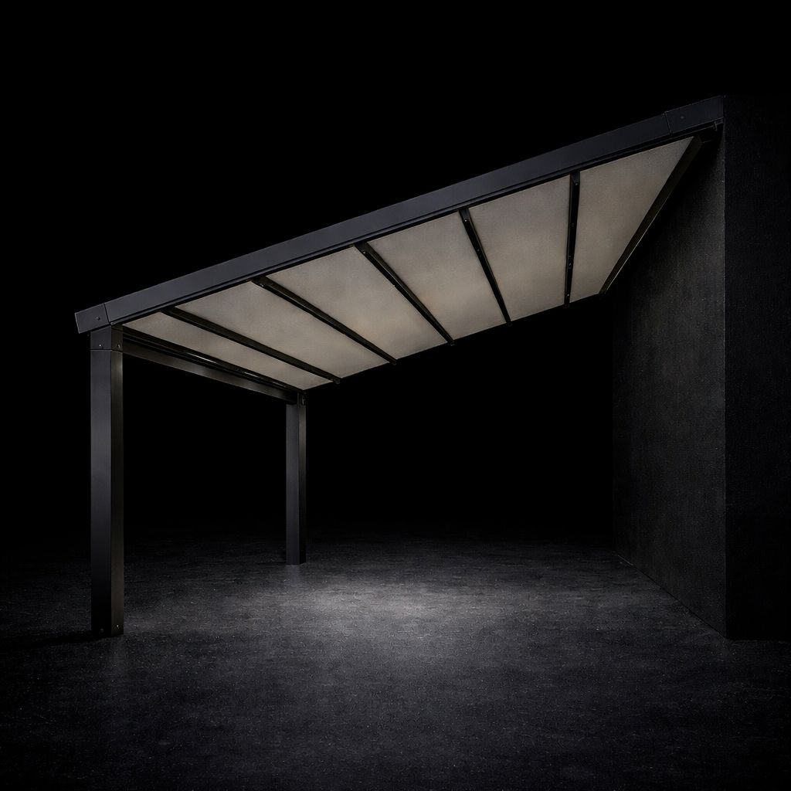
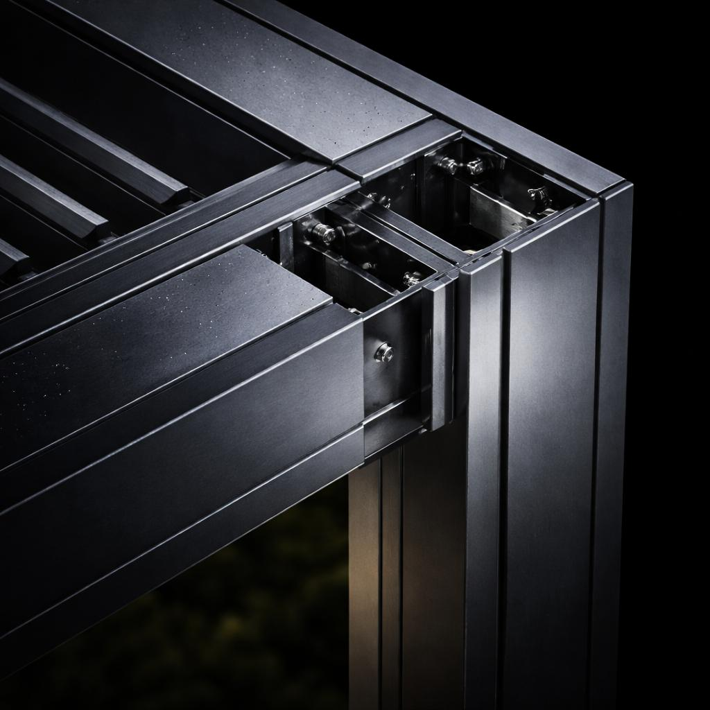
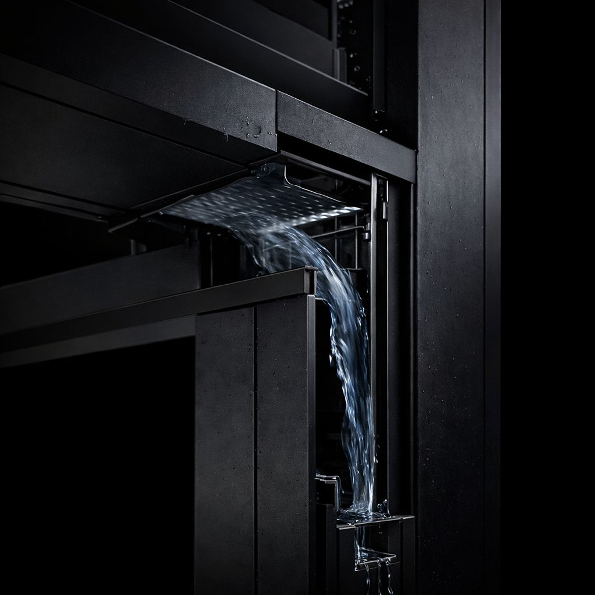
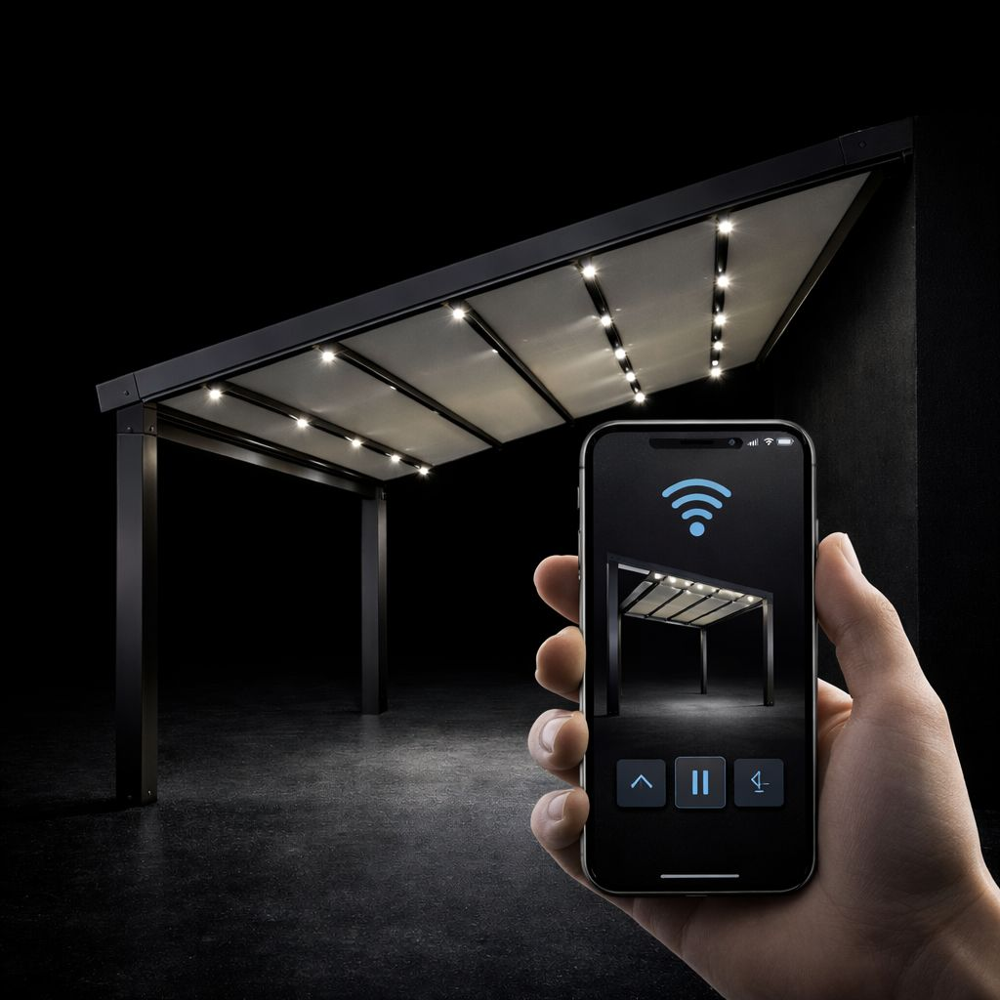
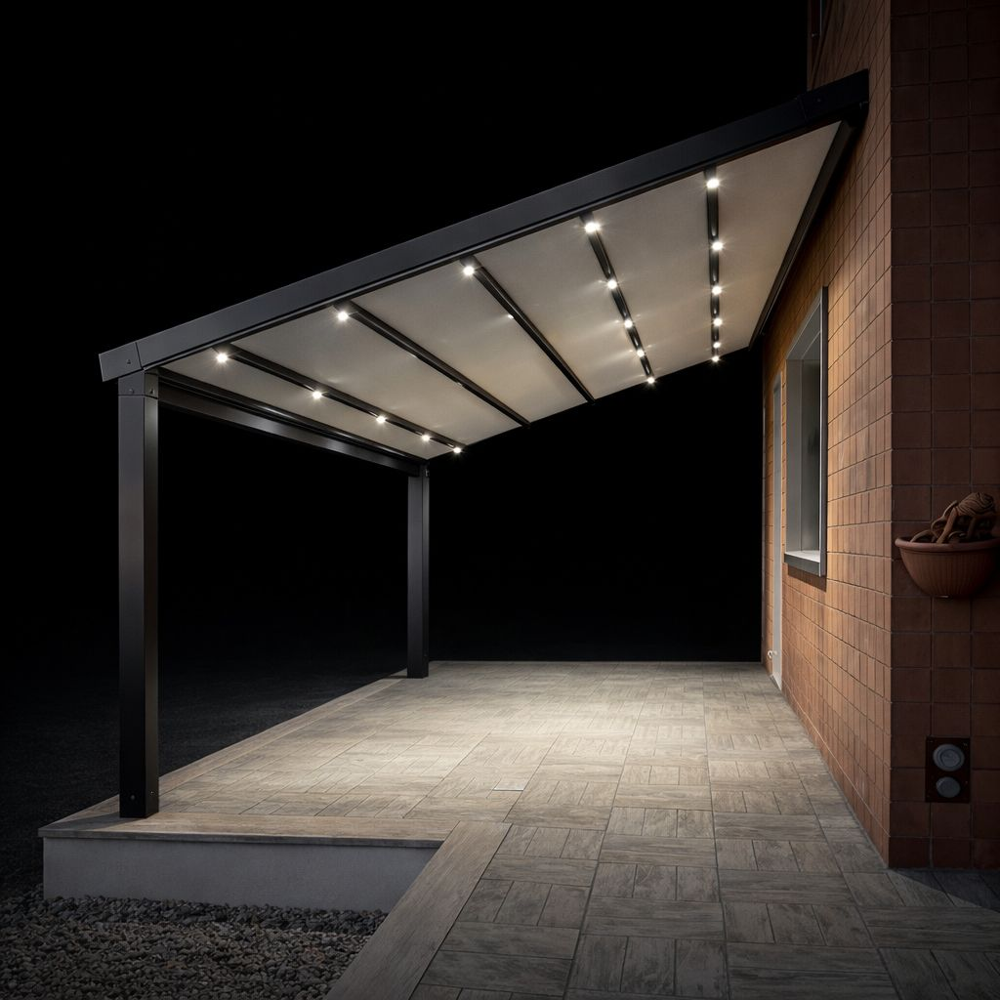
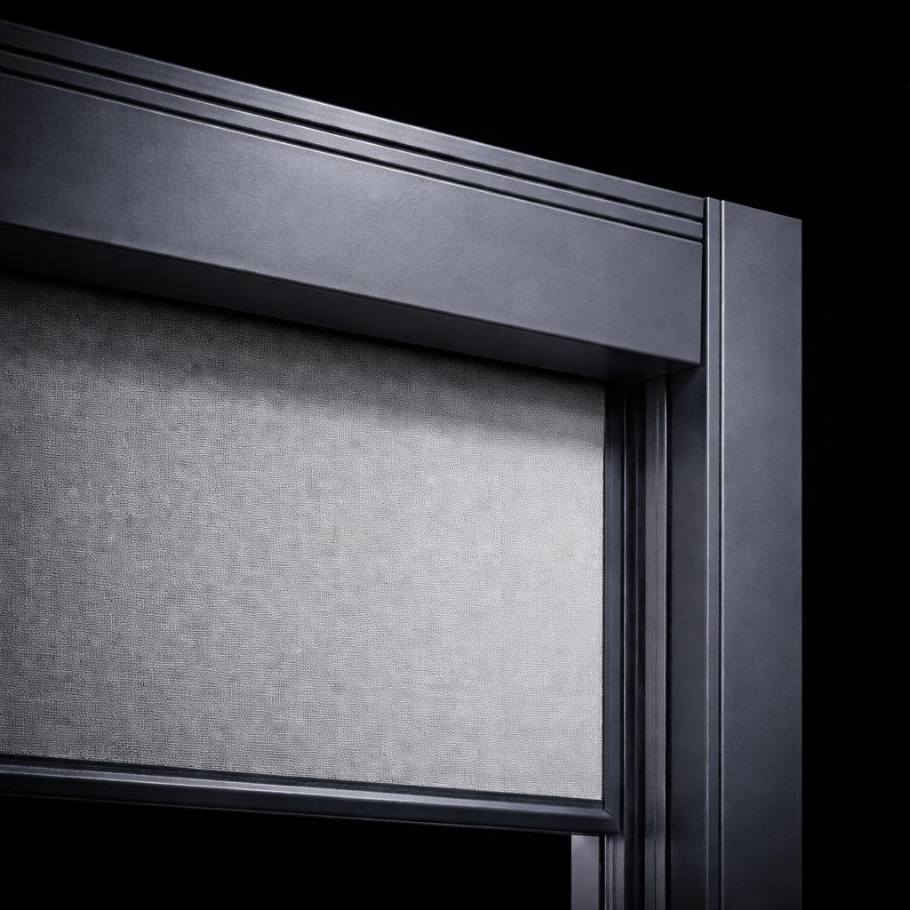
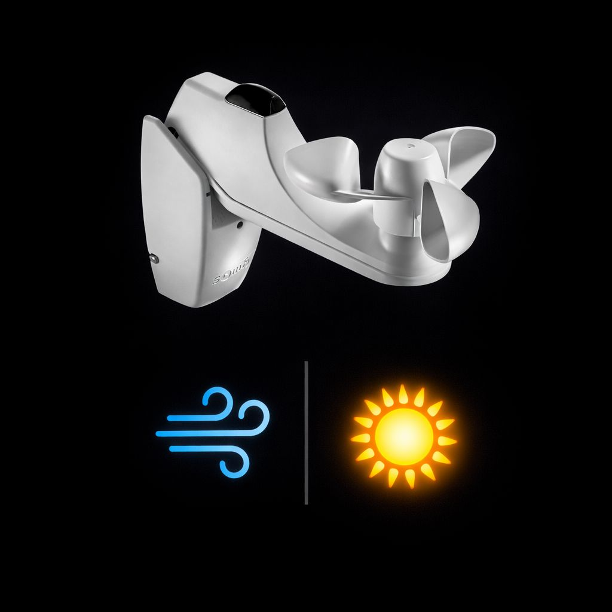
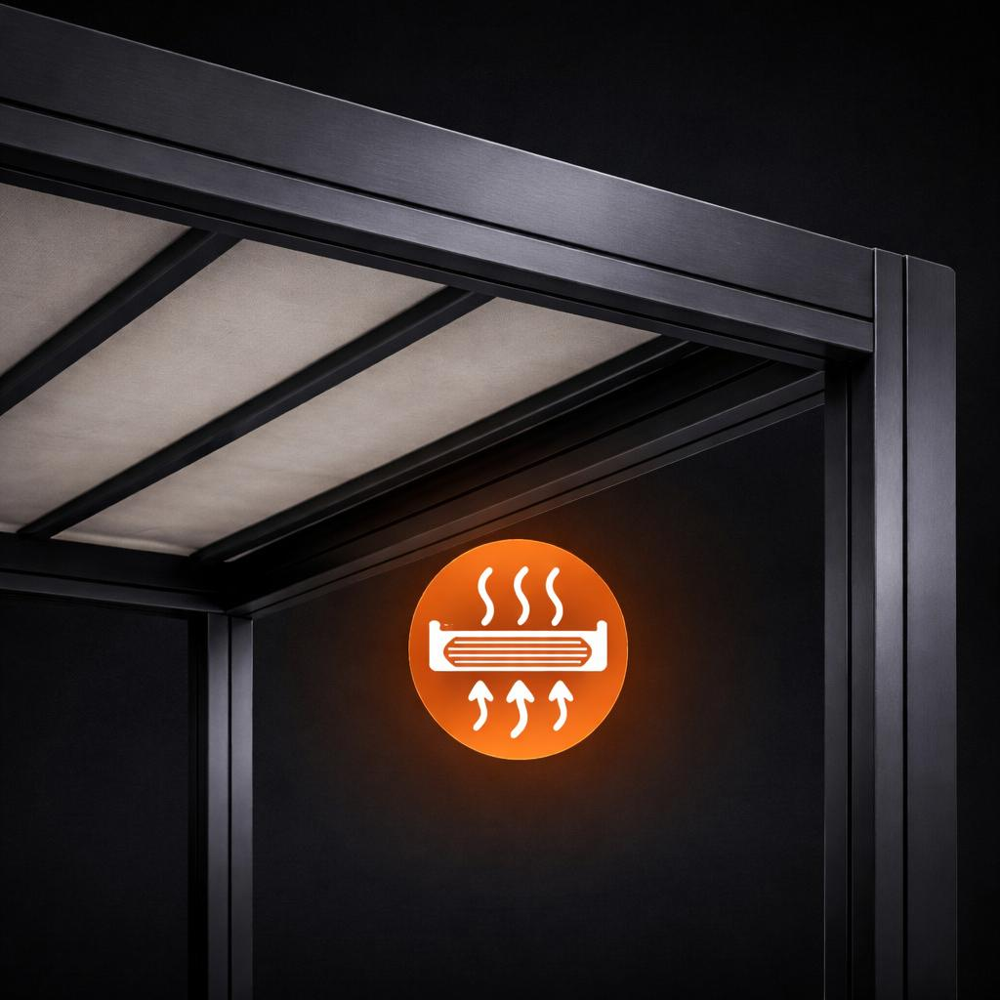

Solución exterior elegante y funcional con techo motorizado, drenaje frontal y opciones premium de confort.
Configurar PérgolaLa pérgola tensada con inclinación está pensada para crear espacios exteriores protegidos con una estética ligera, elegante y bien integrada en la vivienda.
Su cubierta textil motorizada permite disfrutar del exterior con mayor confort, mientras que el sistema de inclinación favorece la evacuación del agua por la parte frontal de la estructura.
Este tipo de pérgola es una solución ideal para quienes buscan una cubierta exterior práctica, motorizada y visualmente ligera. Su diseño se adapta muy bien a terrazas, patios, porches y jardines de estilo contemporáneo.
En ERB Deco trabajamos soluciones de exterior pensadas para combinar diseño, funcionalidad y protección, adaptando cada instalación a las características del espacio.
Ingeniería diseñada para durabilidad, estética y confort exterior.

Techo tensado motorizado
Cubierta textil de recogida motorizada para regular la protección solar y mejorar el uso del espacio exterior.

Estructura de aluminio
Perfilería extrusionada de alta resistencia con una imagen limpia y elegante.

Drenaje frontal
Evacuación del agua por la parte delantera de la estructura gracias a la inclinación de la cubierta.

Automatización
Accionamiento motorizado y posibilidad de integración con sistemas de control y automatización.
La instalación de una pérgola tensada con inclinación debe adaptarse correctamente a las dimensiones del espacio, a la evacuación del agua y a la integración estética con la vivienda.
En ERB Deco trabajamos proyectos de instalación pensados para conseguir una solución exterior elegante, funcional y bien resuelta, tanto en terrazas como en jardines, patios y porches.

Iluminación LED integrada para crear un ambiente más confortable y elegante durante la noche.

Toldo vertical ZIP para una mayor protección lateral frente al sol, el viento o la lluvia.

Sensor de viento y sol para automatizar la protección y mejorar la seguridad de la instalación.

Calefacción interior para ampliar el confort y el uso del espacio exterior en meses más fríos.
La pérgola tensada con inclinación combina ligereza visual, tecnología y confort para crear espacios exteriores más protegidos y mejor aprovechados.
Si buscas una pérgola motorizada con cubierta textil y drenaje frontal, puedes configurar tu proyecto y solicitar información directamente desde nuestra web.
En ERB Deco realizamos proyectos de pérgolas tensadas con inclinación para diferentes espacios exteriores, adaptándonos a las características de cada vivienda, terraza, jardín o patio.
Trabajamos especialmente en zonas de Girona y provincia y Barcelona y provincia, donde desarrollamos soluciones de exterior elegantes, funcionales y pensadas para integrarse con la arquitectura del espacio.
Puedes conocer más sobre nuestra pérgola bioclimática, ver la página de pérgola Compact o consultar la sección de pérgolas técnicas.